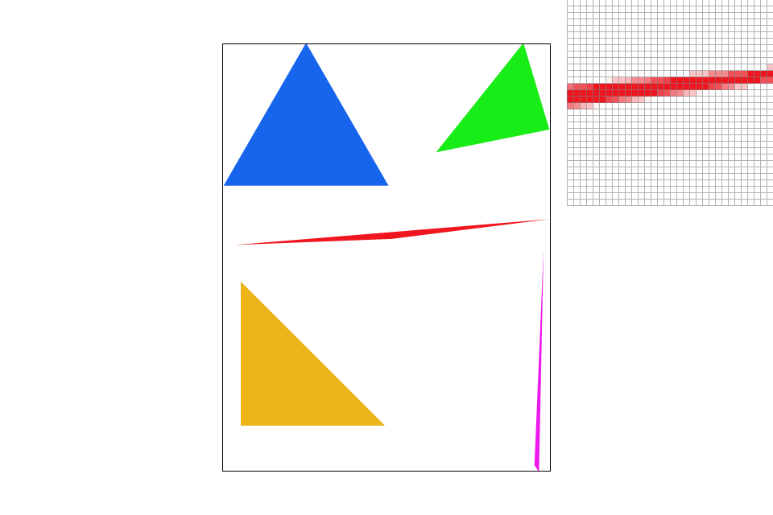

Overview
The purpose of this project overall was to build a basic rasterizer for rasterizing images, AKA use the stored image data in order to determine what color each pixel should be, along with implementing techniques to improve results, such as supersampling, mipmaps, transformations, and bilinear interpolation.
Section I: Rasterization
Part 1: Rasterizing single-color triangles
To begin rasterizing triangles, I first looked at the endpoints of the triangle and that of the screen to calculate the smallest box aligned with the axes that the triangle could fit in, or the bounding box. Once this narrowed down the range of values we needed to sample, I iterted over the square and used the equations given in class to see which side of each line the point being sampled is on. To avoid having to make sure the triangle vertices were clockwise in order, I checked the case in which the sampled point was on the relative "outside" of all sides (the case in which the vertices were traversed counterclockwise and the sample point was in the triangle) and the case in which the point was on the relative inside of each side. To deal with the edge cases, I decided to include them all, adding an "or equal to" to all of my inequalities. After implmenting this basic rasterization, I sped up the computation by implmenting the equivalent of a bounding box around each triangle to avoid extra sampling and rewriting my computation to remove redundancies in arithmetic.
Part 2: Antialiasing triangles
Within my prior rasterizing algorithm, I implemented another set of loops to sample various points within a single pixel as opposed to just the central pixel. When going to read the pixels, however, I wrote code that would average the color from all subpixels for the given pixel. The former (supersampling) allowed us to effectively sample at higher rates than normal, while averaging out this information removed the higher frequency signals, antialiasing the triangles.
|
|
|
|

|
Part 3: Transforms
I implemnted basic transforms to allow for dynamic motion of linked images. Using homogenous coordinates, I implemented scaling, translating, and rotating matrix operations to be applied to various images. After applying them to a generic block "robot", I turned him into a professional gymnast. He just landed in a split after doing a perfect performance and is posing with his hands raised up high in the air.
Section II: Sampling
Part 4: Barycentric coordinates
Barycentric coordinates are a coordinate system in which we can represent points in space based on their normalized "nearness" to the vertices of some triangle. These values make interpolation much easier as we can use these coordinates as weights for a linear combination of the vertex colors to estimate a color for the value sampled within the triangle. This can be seen in the triangle below, where there is a red, a blue, and a green vertex, with the colors linearly interpolated to fill in the missing gaps to create a gradient of colors. Barycentric coordinates allow us to weight the red, blue, and green vertices differently based on point location, making calculations easier.
Part 5: "Pixel sampling" for texture mapping
Sampling in general is the process of evaluating a continuous function at various discrete points. For texture mapping, we go from cartesian coordinates to barycentric. From here we invert the barycentric coordinates but using points in texture space in the conversion. This two step process allows us to go from screen space to texture space to find the texture for a given pixel, which then is displayed. The "Nearest" option uses the nearest texel to the sampled location, while Bilinear interpolation interpolates the four closes texels to find an intermediary value. This method assumes that texture follows a linear gradient between texels and interpolates between them.|
|
|
|
|
|
Part 6: "Level sampling" with mipmaps for texture mapping
While screens may be flat and two-dimensional, real life also has depth and curvature. This can cause various parts of images to have different frequencies. This means that when we downsample to remove aliasing from some part of the picture, we can also cause blurring in other parts. This is overcome with a mipmap that keeps track of the texels at different levels. These levels are calculated based on the changing (u,v) texel space coordinates with respect to the (x,y) pixel coordinates.
Most of these tradeoffs keep the calculations linear relative to the number of pixels, but the coefficients do make a difference. Nearest level is only slightly slower than just using level zero due to the time for calculating the level. Bilinear interpolation (as opposed to just using nearest pixel) requires 4 texel reads, along with 3 multiplications and 6 additions for the interpolation steps, which is much more than simply using the nearest point, but it is still linear based on number of pixels. Trilinear interpolation in essence requires doing the bilinear computation twice and interpolating between them, so it takes around double the time, which is still a linear operation relative to the number of pixels. What really takes a lot of time is supersampling. Assume there are n pixels with k by k supersampling. In effect there are n*k^2 pixels. Since the number of pixels grows along the order of a quadratic of k, so do the times for all the priorly mentioned computations.
Overall, the techniques that take more time do require more memory (along the same order as computation time relative to the number of pixels). However, they do a much better job at antialiasing, which explains why these techniques are used. Even though trilinear interpolation with 16x16 supersampling is costly, you will get a much better image (i.e. much less aliasing) than with nearest pixel, level zero, 1x1 sampling.
|
|
|

|

|
|
|
|
Section III: Further Work to be Done
If I were to work on this project further, I would implement other sampling techniques for both antialiasing (such as jittered or low-discrepancy sampling) and filtering (such as anisotropic filtering or summed area tables). I would also consider parallelizing the sampling to improve performance time and most likely perform metrics to quantify the degree of speed increase.